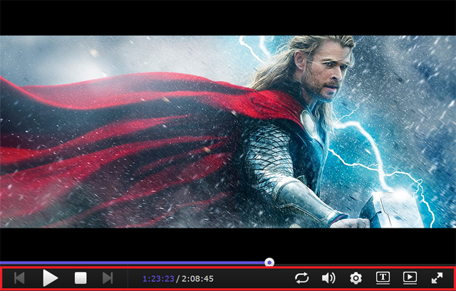

Visión general
Con Video Station, usted puede organizar y clasificar fácilmente sus colecciones de vídeo en diferentes bibliotecas predeterminadas o personalizadas, con el fin de encontrar el video que desea más eficazmente. Además, el reproducir y compartir videos pueden ser tan fácil y sencillo como hacer unos simples clics.
1. Instalar Video Station
Para instalar Video Station, vaya a Centro de paquetes, busque Video Station, y a continuación haga clic en Instalar.

2. Almacenar y clasificar vídeos en bibliotecas predeterminadas
Video Station ofrece tres bibliotecas predeterminadas como se muestra en el panel de la izquierda Película, Serie de TV, y Vídeos caseros. Para asegurarse de que sus vídeos se pueden indexar y categorizar correctamente, es necesario agregar carpetas de vídeo a cada biblioteca y a continuación guardar los archivos en las carpetas de vídeo correspondientes. De forma predeterminada, se han creado tres carpetas de vídeo en la carpeta compartida video para las tres bibliotecas por defecto: película, serie de TV, y vídeos caseros. Sin embargo, además de estas tres carpetas, también puede hacer lo siguiente para agregar más carpetas de vídeo a las bibliotecas.
El sistema buscará automáticamente los metadatos relacionados y otra información (por ejemplo, la imagen del cartel) de dos tipos de vídeo (películas y programas de TV) en Internet. Por lo tanto, para garantizar que sus vídeos se puedan sincronizar con la información correcta, se recomienda encarecidamente que los videos coincidan con el tipo de vídeo especificado de sus bibliotecas respectivas.
Agregar carpetas de vídeo a las bibliotecas predeterminadas
- Vaya a Configuración > Biblioteca.
- Haga clic en Crear > Agregar carpeta para elegir una carpeta NAS de Synology, y seleccione la biblioteca de destino. Se pueden agregar hasta 100 carpetas de vídeo en una biblioteca, pero una vez que se selecciona una carpeta, ya no se pueden seleccionar ni la carpeta ni sus subcarpetas para otra biblioteca.
- Guarde los archivos de vídeo en las carpetas de vídeo para clasificar los vídeos en las bibliotecas correspondientes.
- ¡Ahora puede buscar y ver los vídeos que desee en las bibliotecas!


3. Almacenar y clasificar vídeos en bibliotecas personalizadas
Además de las tres bibliotecas predeterminadas a las que puede acceder cualquier persona de forma predeterminada, usted como admin o usuario DSM que pertenece al grupo administrators también puede crear bibliotecas personalizadas y asignar permisos de acceso a los usuarios.
3.1 Crear bibliotecas personalizadas
- Vaya a Configuración > Biblioteca, y haga clic en Crear > Crear biblioteca.
- Especifique un nombre de la nueva biblioteca, seleccione el tipo de vídeos que desea colocar en la carpeta y, a continuación, elija Pública si desea que todo el mundo pueda tener acceso a la biblioteca, o elija Privada para limitar el acceso a determinados usuarios que tienen permisos. Tenga en cuenta que los videos que usted pone en la carpeta deben coincidir con el tipo seleccionado aquí para garantizar la exactitud de la información de vídeo recopilada desde Internet.
- Si elije Privada, haga clic en Asignar permisos y marque las casillas de verificación para conceder acceso a los usuarios.

3.2 Añadir carpetas de vídeo a las bibliotecas personalizadas
- Vaya a Configuración > Biblioteca.
- Haga clic en Crear > Agregar carpeta para elegir una carpeta NAS de Synology, y seleccione la biblioteca de destino. Se pueden agregar hasta 100 carpetas de vídeo en una biblioteca, pero una vez que se selecciona una carpeta, ya no se pueden seleccionar ni la carpeta ni sus subcarpetas para otra biblioteca.
- Guarde los archivos de vídeo en las carpetas de vídeo para clasificar los vídeos en las bibliotecas correspondientes.
- ¡Ahora puede buscar y ver los vídeos que desee en las bibliotecas!
4. Reproducir vídeos
Una vez que ha clasificado los archivos de vídeo en diferentes bibliotecas, puede seguir los pasos que se indican a continuación para reproducir sus vídeos en Video Station. Se recomienda encarecidamente que primero instale VLC media player (Windows, Linux) en su ordenador. Además de reproducir vídeos en su ordenador local, también puede transmitir sus vídeos a DMA compatibles con DLNA/UPnP o dispositivos compatibles con AirPlay para la reproducción de vídeo.
Reproduzca vídeos con el Reproductor de vídeo incorporado
- Seleccione un clip de vídeo que desea reproducir, y a continuación, haga clic en el icono de reproducción de la imagen de vídeo, o haga clic en Acción > Reproducir.
- El vídeo debería empezar a reproducirse inmediatamente. De lo contrario, compruebe que el formato de vídeo es compatible con su navegador web, o si ha instalado el complemento VLC en su ordenador.
- Utilice los botones de la pantalla y la barra de progreso en la parte inferior del Reproductor de vídeo según sus necesidades.También puede ajustar el volumen, seleccionar la calidad de reproducción de vídeo y pistas de audio, activar los subtítulos, o transmitir el vídeo a otro dispositivo (si corresponde). 

Para obtener información detallada del componente VLC y los dispositivos compatibles, consulte Ayuda de DSM > Video Station > Reproducción de vídeo.
5. Compartir vídeos con el público
Con la función de uso compartido público, puede compartir fácilmente sus vídeos con otras personas utilizando Video Station. Cualquier persona puede acceder a todos los vídeos compartidos públicamente con el enlace, y se pueden gestionar en la página Colección.
Compartir vídeos con los demás
- Vaya a cualquier biblioteca de vídeo y haga clic en Todo en la esquina superior derecha para ver todos los videos de esta biblioteca.
- Haga clic en el icono Modo de selección, o mantenga pulsada la tecla Ctrl o Mayús para seleccionar varios vídeos. A continuación haga clic en Acción > Compartir con el público.
- Si sólo ha seleccionado un video para compartir, el vídeo se añadirá a una colección compartida denominada Vídeos compartidos. Allí, se pueden gestionar todos los videos que ha compartido, uno por uno.
- Si ha seleccionado varios vídeos para compartir, los videos se pueden agrupar en una nueva colección compartida.
- Como alternativa, puede hacer clic en Acción > Colección para agregar los videos seleccionados a una colección compartida existente (si corresponde).
- Especifique un período de validez si es necesario.
- Simplemente copie y pegue el enlace en los correos electrónicos, mensajes instantáneos y páginas web para compartir los vídeos con todo el mundo.

6. Organizar y ver vídeos en dispositivos móviles
Para conectarse a Video Station a través de dispositivos móviles, puede descargar DS video con dispositivos iOS/Android o Windows Phone con los siguientes códigos QR para reproducir vídeos y organizar sus colecciones en sus dispositivos móviles, o bien transmitir vídeos a sus dispositivos DMA o AirPlay tanto en casa como en sus desplazamientos.